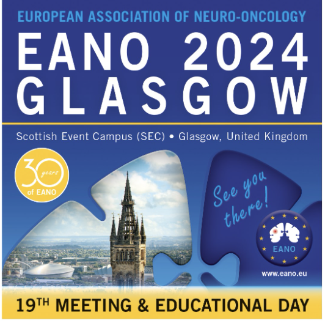
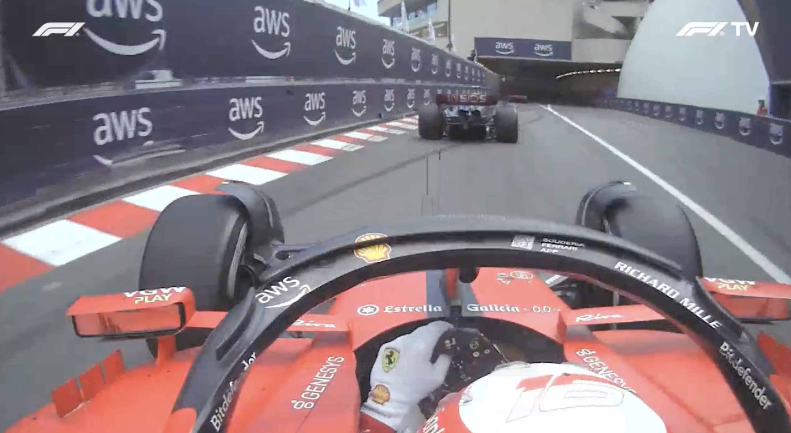
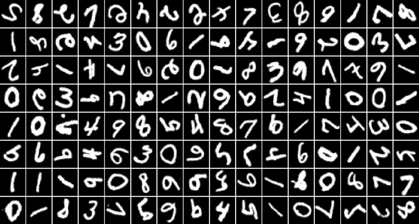

Research
I am interested in developing reinforcement learning algorithms that enable agents like robots to
continually learn generalizable skills.
|
|

|
Agent-based Modeling for Patient-Centered Clinical Decision Support in
Neuro-Oncology
Eduardo Rodriguez Almaraz,
Brenda Miao,
Yajat Yadav ,
J de Groot,
J Young,
A Vo,
A Butte,
B S Mitchel,
D Raleigh,
N Butowski,
Ahmed Alaa
Neuro-Oncology, Oct 2024
Journal
Article
Using LLM agents to simulate clinical decision-making scenarios in neuro-oncology, validated by
several independent clinicians.
|
|

|
VROOM: Visual Reconstruction over Onboard Multiview
Yajat Yadav* ,
Varun Bharadwaj* ,
Tanish Baranwal* ,
Jathin Korrapati*
Preprint (Class Project), 2025
project page
/
arXiv
/
code
Reconstructing 3D F1 circuits and car motion using multiple onbard camera views.
|
|

|
ONG: Orthogonal Natural Gradient Descent
Yajat Yadav* ,
Jathin Korrapati* ,
Patrick Mendoza*
Preprint (Class Project), 2025
arXiv
/
code
A continual-learing algorithm based on natural gradients and their projections onto task-specific
subspaces. Rotated MNIST figure on the left is from this
paper.
|
|
Teaching
|
Teaching Assistant,
EECS 126 Spring 2025
Tutor/Reader,
EE 120 Fall 2024
Tutor/Reader,
EE 120 Spring 2024
Academic Intern,
CS 70 Fall 2023
Academic Intern,
CS 70 Summer 2023
Academic Intern,
CS 61B Summer 2023
Academic Intern,
CS 61A Spring 2023
|
|
Awards
|
EECS Evergreen Undergraduate Research Award,
2025
EECS Evergreen Undergraduate Research Award,
2024
Dean's List (UC Berkeley College of Engineering): Fall 2022, Fall 2023, Spring 2024, Fall
2024
Silver
Medal, National USA Biolympiad Finals,
2020
|
|
Extracurriculars
|
Department Relations Head, Eta Kappa Nu (EECS Honor
Society)
Industry Projects Committee, Machine Learning at
Berkeley
Software Division, Neurotechnology at
Berkeley
|
|
{kind=link}